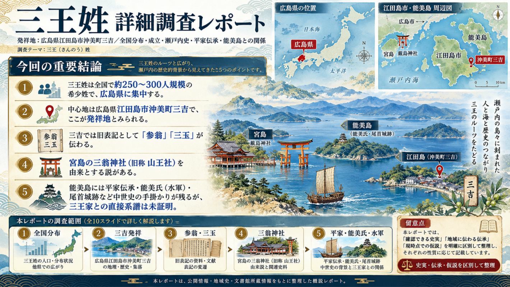
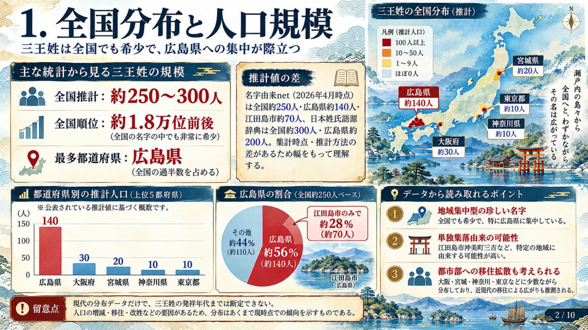
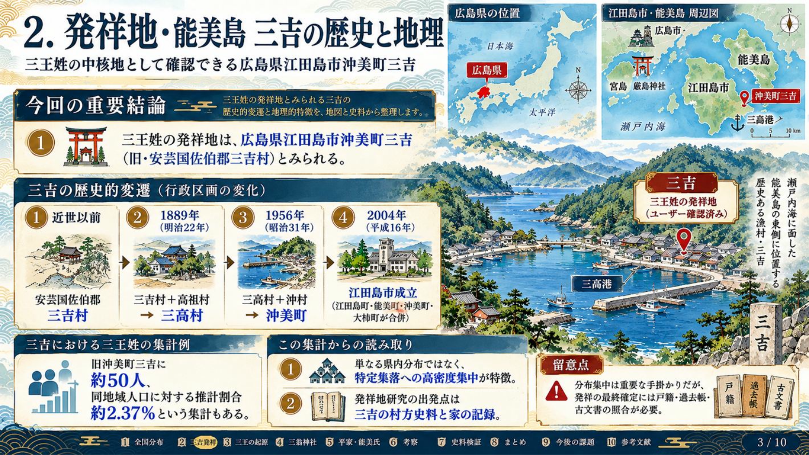
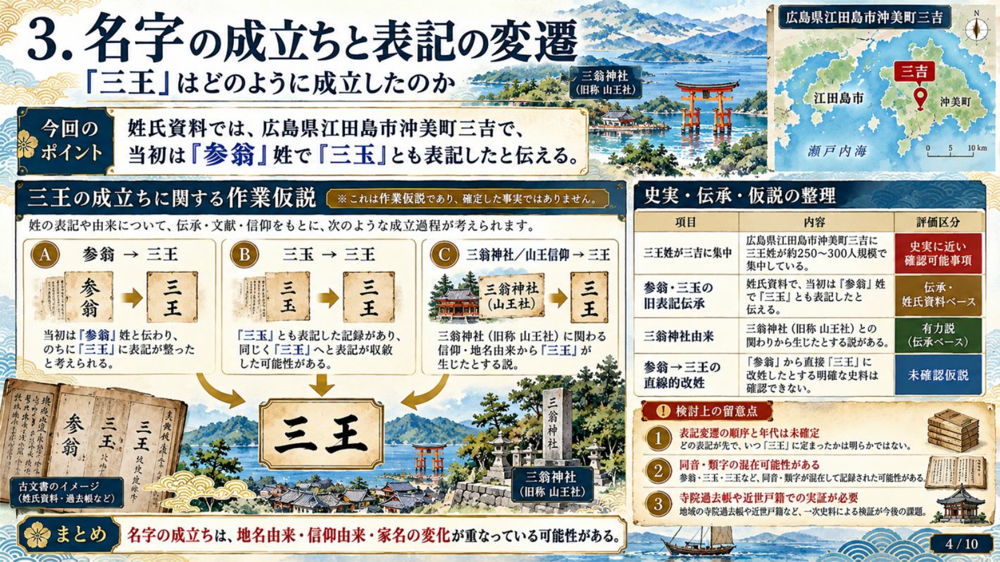
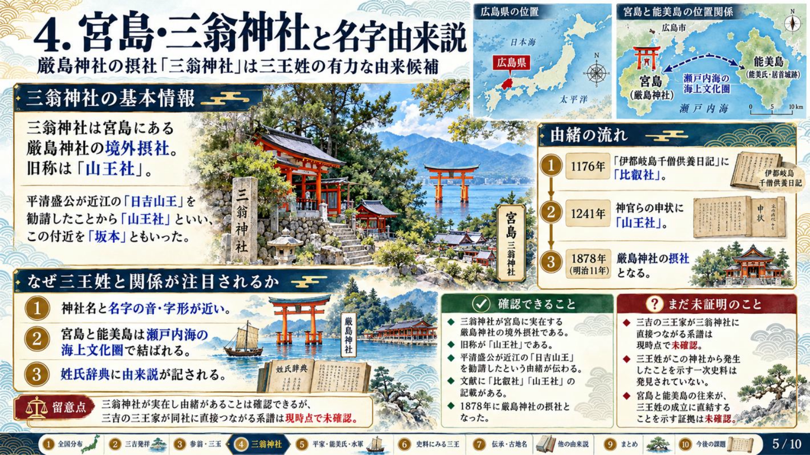
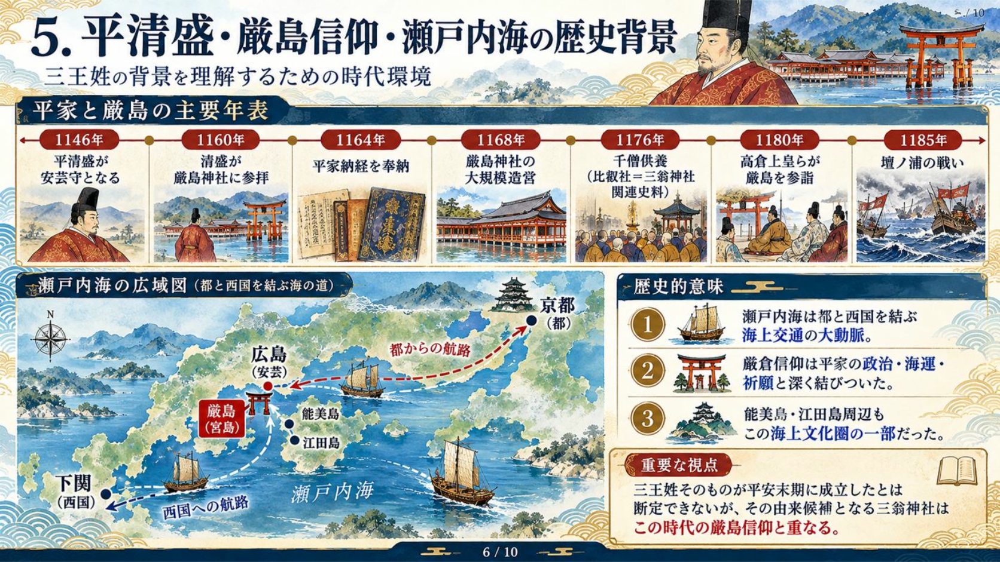
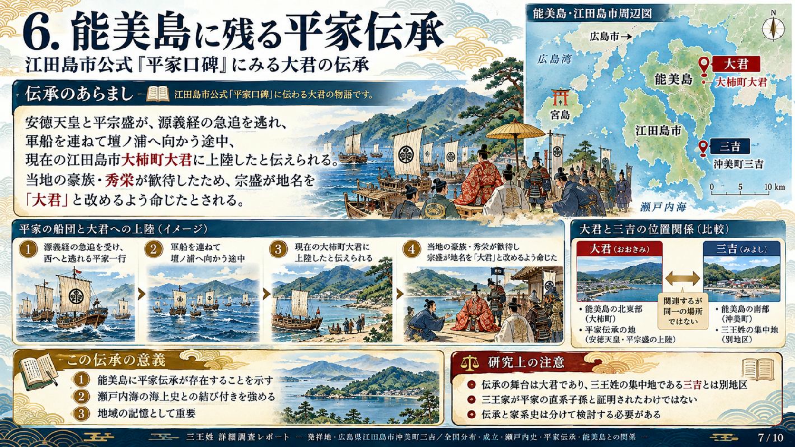
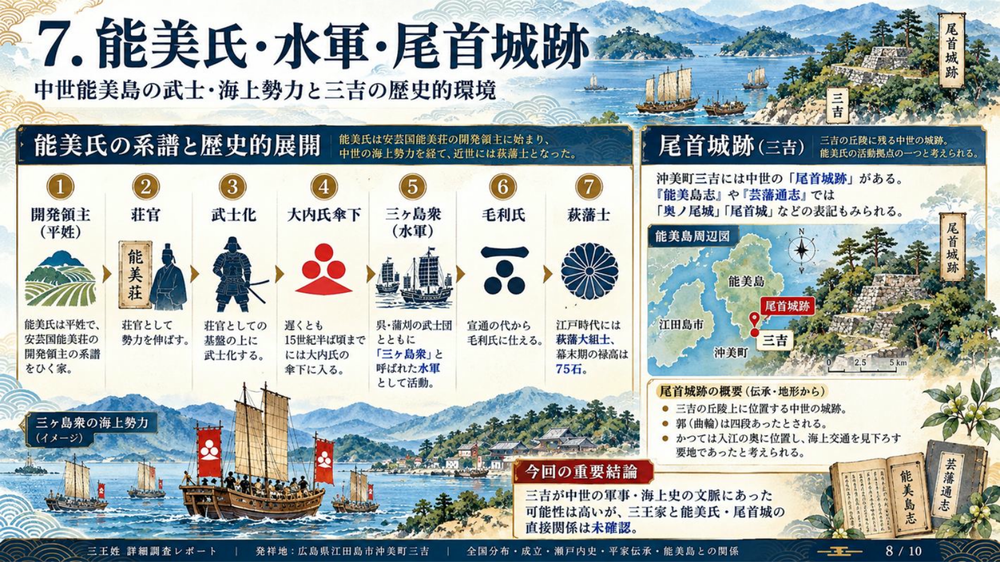
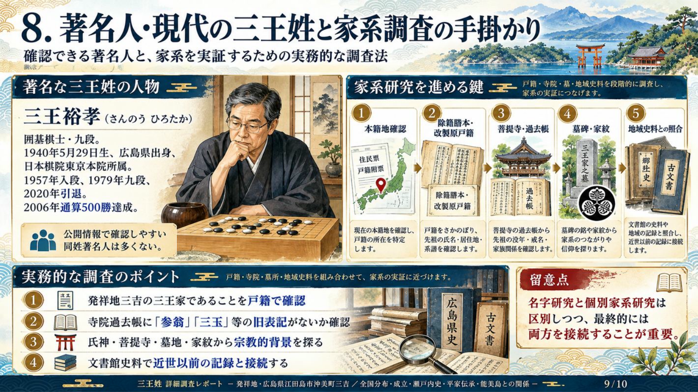
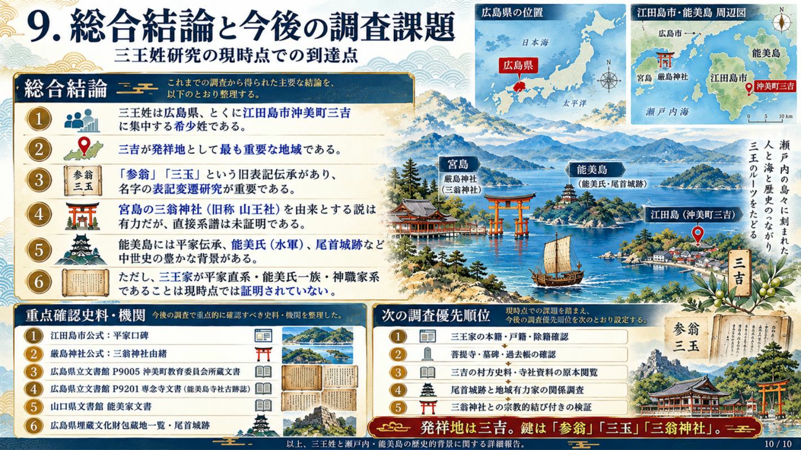

確認できたこと
三王姓の三吉への集中的分布。三翁神社の存在と「山王社」の由緒。能美氏が平姓の在地武家だったこと。三吉の尾首城跡の所在地と歴史地名資料。江田島市が公表する平家口碑。
発祥地が江田島市沖美町三吉であるという家系情報を出発点に、名字資料・城館史・神社由緒・文書館目録を交差検証しました。
三王姓の三吉への集中的分布。三翁神社の存在と「山王社」の由緒。能美氏が平姓の在地武家だったこと。三吉の尾首城跡の所在地と歴史地名資料。江田島市が公表する平家口碑。
三王の旧表記「参翁」「三玉」、三翁神社由来説、平宗盛と安徳天皇が大君に上陸したという伝承。
三王家の初見史料、いつ現在の文字になったか、宮島との人的・祭祀的接点、尾首城の城主・被官と三王家の関係。

民間の姓氏推計は統計年・推計方法に差があるため、単一の確定人口ではなく分布の傾向として扱います。
全国約300人・全国18,361位、広島約200人、大阪約30人、宮城約20人、神奈川約20人。旧佐伯郡沖美町三吉約50人（地域比率約2.37%）。別の名字由来集計では全国約250人、広島約140人、江田島市約70人という推計もあり、相互に直接比較できません。
出典：日本姓氏語源辞典・分布 ↗。可視化は約300人側の都道府県推計値を採用。

三王家の発祥地である三吉の行政変遷と土地の性格を、旧地名から読み解きます。
安芸国佐伯郡の能美島・三吉村。村方支配・寺社・土地所有は江戸期の史料で検証する。
三吉村と高祖村が合併し三高村となる。
三高村と沖村が合併して沖美町となる。
江田島町・能美町・沖美町・大柿町の合併により江田島市成立。
近世の村・近代の本籍地・現代の居住地をつないで考える起点。
⌖ Googleマップで「沖美町三吉」を開く ↗西能美島の交通・海上交流の理解に役立つ地点。
⌖ Googleマップで「三高港」を開く ↗
姓氏辞典に載る異表記の伝承を、音韻・神社名・旧家の記録の三方向から検証します。
日本姓氏語源辞典では、江田島市沖美町三吉において「当初は参翁姓で三玉とも表記していた」と伝わるとします。同辞典は宮島・三翁神社に由来する「事物」姓という説も収録しています。もっとも、参翁から三玉を経て三王になったとする一方向の時系列は、この資料だけでは確定しません。
口頭で伝わった姓の音に別の漢字を当て、戸籍や帳簿で固定した可能性。
宮島の山王信仰・三翁神社と関係する家名が変化した可能性。
各地の同姓が単一祖先に由来せず、複数の土地で成立した可能性。

名字由来説の宗教的な中核として、宮島の三翁神社を厳島神社公式由緒から確認します。
厳島神社公式サイトは三翁神社を境外摂社とし、平清盛が近江の「日吉山王」を勧請したため「山王社」と呼び、付近を「坂本」とも称したと説明します。社殿は三殿が並び、現在の祭神には佐伯鞍職・所翁・岩木翁・安徳天皇・二位尼など多様な人物・神格が含まれます。この由緒は名字の読み「さんのう」と宗教的背景を検討する強い手掛かりです。
平清盛による日吉山王勧請が神社公式由緒に記載される（厳密な勧請年は未確定）。
『伊都岐島千僧供養日記』に「比叡社」の記載があったとする地域の由緒資料。
関連申状に「山王社」の記載があったとする由緒資料。
三翁神社は現在、厳島神社の境外摂社。公式案内で確認可能。
ただし「日吉山王 → 三翁神社」という神社史のつながりと、「三翁神社 → 三吉の三王家」という人物・系譜のつながりは分けて考えなくてはなりません。
⌖ Googleマップで「三翁神社」を開く ↗
名字の起源そのものとは別に、安芸・瀬戸内に山王信仰が伝わった歴史的環境を整理します。
平清盛が安芸守となる。
清盛が厳島に参詣したとされる。
平家一門が『平家納経』を厳島に奉納。
清盛の支援による厳島神社の大規模造営。
高倉上皇が厳島参詣。
壇ノ浦の戦いで平家が敗れる。
都と西国を結ぶ瀬戸内海は、交易・軍事・宗教儀礼の大動脈でした。厳島と西能美島を隔てる海は人の往来を阻むだけでなく、信仰・婚姻・労働・交易を結びつける経路でもあります。三王という名字が平安末に成立したと証明されたわけではないものの、山王社由来説を考える際の時代背景にはなります。

江田島市が公式に紹介する地名伝承を、特定の三王家の血縁系譜と切り離して読む必要があります。
安徳天皇と平宗盛が源義経の追撃から逃れ、壇ノ浦へ向かう途中に当地へ上陸。豪族・秀栄の歓待を受け、宗盛が地名を「大君」と改めるよう命じたという伝承。
この話は江田島市の公式「平家口碑」に記載されています。ただし、物語の舞台は大柿町大君です。三王姓が集中する沖美町三吉とは別地区であり、秀栄の子孫が三王家であるという確認資料はありません。平家の「落人」という単語から直系血縁へ短絡することは避けます。

能美島が中世に平姓武家と水軍の活動圏だったことは、山口県文書館の能美家文書の解説で確認できます。
能美氏は平姓で、安芸国能美荘の開発領主の系譜を引き、荘官から武士化したとされる。
大内氏傘下に入り、呉・蒲刈の武士団と「三ヶ島衆」と呼ばれる水軍として活動。
宣通の代から毛利氏に仕えたと伝わる。
萩藩大組士。幕末期の禄高は75石。

三吉村の中世城館について、一般的な「城があった」以上の地誌情報が確認できました。
現在の江田島市沖美町三吉。木ノ下川を挟み徳正寺と向かい合う、標高約30メートルの丘陵。元来は入江の奥に面したとされる。
四段の郭（曲輪）が旧状に近いとされ、麓には当時のものと考えられる十余メートルの石垣が記録される。区域は「千城原」と呼ばれる。
『能美島志』では「奥ノ尾城」、『芸藩通志』では「尾首城」「奥尾」「矢張城」の名称が挙がる。
三王家との関係を検証するには、城主名の確認に加えて、周辺の寺社・耕地・古墓・村役人記録を追う必要があります。なお、広島市安佐北区可部町周辺にも同名の「尾首城」があり、別の城です。検索時に混同しないよう注意が必要です。
⌖ Googleマップで「三吉の尾首城跡（地名データ記載座標）」を開く ↗同姓の著名人の事績と、個々の三王家が近世まで遡るための調査手順をまとめます。
1940年5月29日生まれ、広島県出身。日本棋院東京本院所属の囲碁棋士・九段。1957年入段、1979年九段、2006年通算500勝達成、2020年引退。三吉の三王家との血縁は公表資料から未確認です。
近代戸籍で実在する先祖を確定し、その没年・居住地・通称から寺の過去帳や旧村史料へ遡る手順が実証的です。戸籍等は法令に基づく請求資格と保存期間の制約があります。古い「参翁」「三玉」の記載が見つかれば、家系と名字研究をつなぐ重要な根拠になります。

面白い説ほど、その根拠と検証可能性を明確にして記録します。
| 説・主張 | 現状の評価 | 必要な証拠 |
|---|---|---|
| 三吉が三王姓の発祥地 | 有力な家系情報＋分布 | 最古の本籍・村方帳簿・墓碑 |
| 参翁／三玉という異表記 | 姓氏資料の伝承 | 実際にその表記がある原本 |
| 三翁神社由来 | 辞典に掲載された由来説 | 祭祀・往来・社家・家名の関係文書 |
| 平家落人の子孫 | 地域伝承からの推測 | 系図の連続性・同時代の一次史料 |
| 能美氏と同族 | 未確認 | 家臣帳・契約・系図・家紋を総合照合 |
| 三王氏は守護大名で三吉一帯を支配 | 出典不明・要警戒 | 守護職任命・当主名・領地支配文書 |
| 三王家と尾首城主の関係 | 未確認 | 城主名・被官名・土地支配を示す史料 |
本当の突破口は公開記事ではなく、現地・文書館の原本照合です。
| 所蔵先／史料 | 確認できる内容 | 今回調べる問い |
|---|---|---|
| 広島県立文書館 P9005 | 沖美町教育委員会所蔵文書。西能美島の田畑帳・人別帳・高祖村地詰帳など | 三吉または近隣地域に三王・参翁・三玉が登場するか |
| 広島県立文書館 P9201 | 専念寺文書。正徳5年『能美島寺社古跡誌』、『能美島誌』 | 寺社・城館・在地家の記載と旧表記 |
| 山口県文書館 能美家文書 | 110点。能美氏の所領・役職・家系に関係する文書群 | 三吉の人物・城主・被官との接点 |
| 『芸藩通志』／『日本歴史地名大系』 | 尾首城の異名・城館立地 | 城主・近隣有力家・寺社との関係 |
| 三吉の菩提寺・墓所・家伝 | 現地調査が必要 | 「参翁」の最古の記録・家紋・先祖の通称 |

下のリンクは実際のGoogleマップ検索を開きます。生成イラストではなく地理情報の確認に利用してください。
三王姓の集中地・家系上の発祥地
⌖ Googleマップで「沖美町三吉」を開く ↗厳島神社の境外摂社・山王信仰
⌖ Googleマップで「三翁神社」を開く ↗平家口碑が残る伝承地
⌖ Googleマップで「大君」を開く ↗三吉の中世城館（位置は地名データ参照）
⌖ Googleマップで「尾首城跡」を開く ↗尾首城の地誌に現れる地理的目印
⌖ Googleマップで「徳正寺」を開く ↗三吉の海上交通を考える参考地
⌖ Googleマップで「三高港」を開く ↗史料本文を実見したものと、所蔵情報だけを確認したものは区別しています。